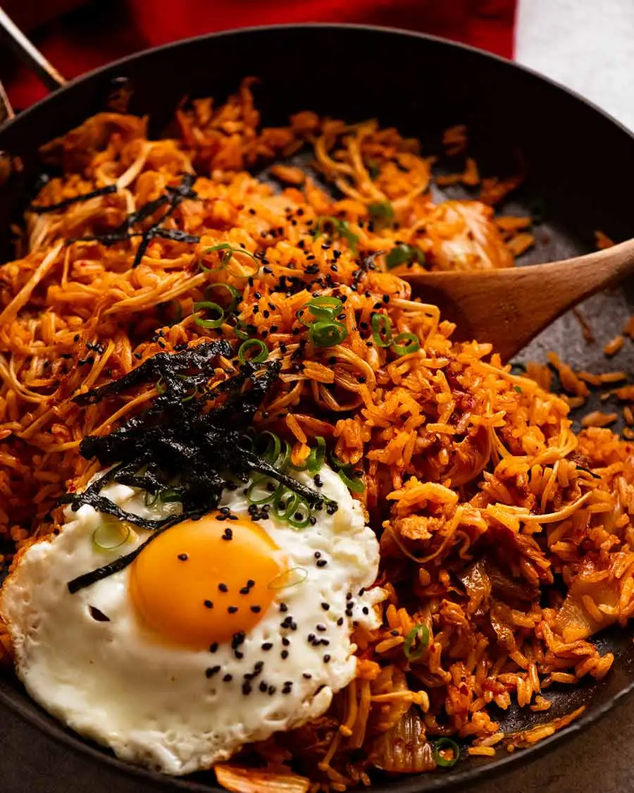

The Most Basic But Delicious Kimchi Fried Rice Recipe!

This is the most basic but delicious kimchi fried rice,
kimchi bokkeumbap you will make!
Ingredients
- One egg, at room temperature
- Rice (preferably day old)
- 1 tbsp gochujang
- 1-2 tbsp kimchi juice
- Sesame oil
- Sesame seeds, for garnish
- Green onions
- 1/2 a white onion
- One clove of garlic
- Some cheese (I used cheddar but mozzarella also works)
- Carrots
- Kimchi of course! (fermented would be better)
- Protein of your choice (I used pork belly, but
tuna, chicken, or shrimp would also work)
Directions
- Wash and dice carrots and onions. Finely mince the garlic.
- Heat a pan with some olive oil over medium heat. Cook an egg
sunny side up. Once the egg whites are set but the yolk is still runny,
place the egg aside on another plate.
- Heat a large pan over medium heat. Place the pork belly, and allow
to cook for about 2 minutes on each side. (If using other meat, drizzle
some olive oil on the pan so it dosen't burn. Pork belly has a high fat content
so we usually don't need to add oil.)
- Once the pork belly has cooked, use some tongs and scissors to cut
it into bite-sized pieces. Add the onions and carrots and cook them until slightly browned,
about 2 minutes.
- Add the kimchi and about 1-2 tbsp of kimchi juice. Stir fry it for about 2 minutes.
- Add the gochujang and cook for about one minute. Then add the rice, making sure
to break apart any clumps. Reduce the heat to low-medium, and continue to cook until
the rice has been fully incorporated with the sauce.
- Cut the seaweed sheets into strips, then add it to the rice. Drizzle some sesame oil to taste.
Then, add some cheese on top, and cover the pan with a lid. At this point, you can turn off the heat
and allow the cheese to melt from the residual heat.
- Place the fried rice in a bowl, top with a fried egg, and garnish with some sesame seeds
and green onion. Enjoy!